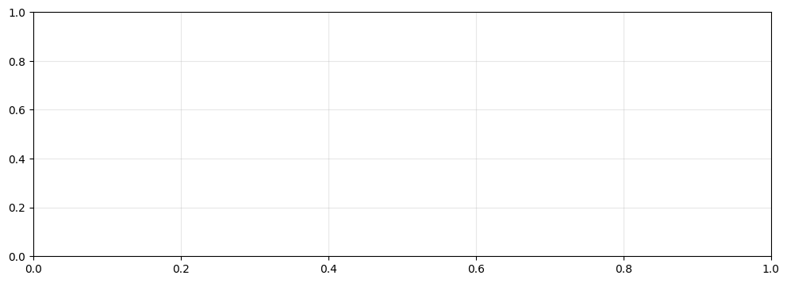

4Time Series Foundations: Visualization and Decomposition
Open In Colab
Module 0 · Lesson 1 of 13 · Student edition Estimated class time: 75–90 minutes Source sequence: Original Day 1
4.1 Learning objectives
By the end of this lesson, you should be able to:
Explain why temporal ordering changes how data should be analyzed.
Identify trend, seasonality, and changing variance in a time plot.
Interpret a multiplicative seasonal decomposition.
4.2 Before We Begin
Prompt: Reflect on a day, week, semester that you remember clearly. What did you do? How were you feeling throughout?
Visualize the time you chose by drawing it and provide a caption for your visualization. You will have 7 minutes for this prompt.
Student Learning Outcome (SLO 1): > Diagnose temporal dependence and stationarity by creating and analyzing time series plots, > rolling statistics, and autocorrelation functions, and justify your conclusions in writing.
4.2.1 What is a time series?
A time series is a sequence of data points collected at successive points in time — think daily temperatures, monthly sales, or yearly airline passenger counts.
Time series data is fundamentally different from regular tabular data because the order of observations matters. A value today may depend on the value yesterday. This is called temporal dependence.
In this notebook you will: 1. Load and visualize a classic time series dataset 2. Decompose the series into trend, seasonality, and residuals 3. Compute and interpret rolling statistics 4. Test for stationarity using the Augmented Dickey-Fuller test 5. Plot and interpret the Autocorrelation Function (ACF)
4.3 Part 0 — Imports & Setup
Run the cell below to import everything you need. You do not need to modify this cell.
# Standard data & plotting librariesimport pandas as pdimport numpy as npimport matplotlib.pyplot as pltimport plotly.express as px# statsmodels: classical time series toolsfrom statsmodels.tsa.seasonal import seasonal_decomposefrom statsmodels.tsa.stattools import adfullerfrom statsmodels.graphics.tsaplots import plot_acf, plot_pacf# Notebook display settingsplt.rcParams['figure.figsize'] = (12, 4)plt.rcParams['axes.grid'] =Trueplt.rcParams['grid.alpha'] =0.3%matplotlib inlineprint('All imports successful!')
All imports successful!
4.4 Part 1: Load & Visualize the Data
We will use the classic Air Passengers dataset: monthly totals of international airline passengers from 1949–1960.
💡 Syntax reminder:df.head(n) shows the first n rows. parse_dates tells pandas to parse the ‘Month’ column as a datetime. index_col makes that column the row index. A DatetimeIndex is essential for time series work in pandas.
4.4.2 1.2 Plot the raw time series
Your turn! Fill in the blanks to create a line plot of passenger counts over time.
fig, ax = plt.subplots()# FILL IN:ax.plot(???['???'],???['???'], color='steelblue', linewidth=1.5)ax.set_title('Monthly International Airline Passengers (1949-1960)')ax.set_xlabel('Date')# FILL IN: write a descriptive y-axis labelax.set_ylabel('???')plt.tight_layout()plt.show()

4.4.3 ✏️ Written Response 1.2
Look at your plot and answer the following in 2–4 sentences:
Do you notice an overall trend (long-term increase or decrease)?
Do you notice seasonality (a repeating pattern within each year)?
Does the variance (height of the seasonal swings) stay constant, or does it grow?
Double-click this cell to edit it.
YOUR ANSWER:
4.5 Part 2: Decomposition
We can formally split a time series into three components: - Trend: the long-run direction - Seasonality: regular, repeating fluctuations (e.g., every 12 months) - Residual: what remains after removing trend and seasonality (ideally random noise)
Because the seasonal swings grow larger as the trend rises, we use a multiplicative model:
This cell is complete — run it and study the four panels.
# period=12 because we have monthly data with annual seasonalityresult = seasonal_decompose(df['Passengers'], model='multiplicative', period=12)fig = result.plot()fig.set_size_inches(12, 8)plt.suptitle('Multiplicative Decomposition — Air Passengers', y=1.01)plt.tight_layout()plt.show()
4.5.2 ✏️ Written Response 2.1
Answer each question in 2–3 sentences:
What does the trend component tell you about air travel during this period?
What does the seasonal component suggest about when people tend to fly?
Does the residual look like random noise, or is there still structure in it?